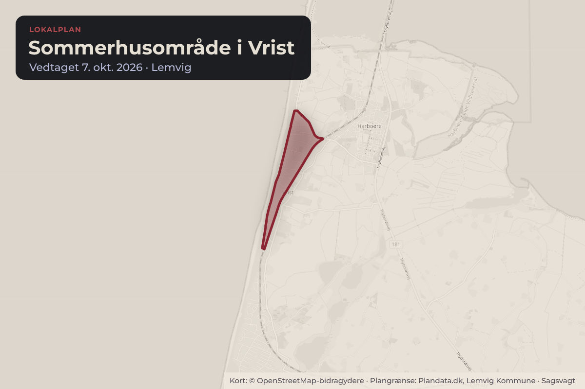
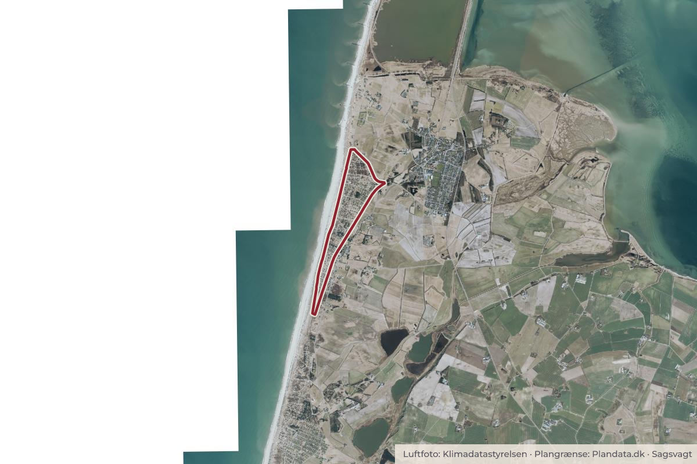

Besluttet 22. september, Teknik- og Miljøudvalget, Lemvig
Endelig vedtagelse af Lokalplan 247 - Sommerhusområde i Vrist
Efter 8 ugers fornyet offentlig høring fremlægges Lokalplan 247 til endelig vedtagelse. Der er indkommet 10 bemærkninger til forslaget. I særskilt bilag er de 10 høringssvar medtaget i ét samlet bilag.

Kort: © OpenStreetMap-bidragydere. Plangrænse: Plandata.dk, Lemvig Kommune.

Har du et billede fra Sommerhusområde i Vrist? Send det til os
Kort fortalt
- Hvem
- Teknik- og Miljøudvalget, Lemvig Kommune
- Hvornår
- Tirsdag 22. september 2026
- Status
- Besluttet. For indstillingen stemte Bent Graversen, Peder Hummel, Henrik Grøn, Ole Kjærgaard og Jonas Munkholm Jensen. Imod stemte Peter Borup Sørensen og Trine Rønn.
Læs hele sagen Kommunens egen tekst
Indstilling
DIREKTØREN FOR TEKNIK & MILJØ INDSTILLER:
At de indkomne høringssvar gennemgås med henblik på en vurdering af, om de
giver anledning til væsentlige eller tekniske ændringer i Lokalplan 247, og
At Lokalplan 247 - Sommerhusområde i Vrist med gennemførte tekniske
korrektioner, og med de justeringer der fremgår af bilag med administrationens
bemærkninger til planen, vist med rødfarve vedtages endeligt og
At bilag 7 justeres, med ejendommen Gloryvej 41 på 141 m², da noget byggeri på
ejendommen imellem tiden er lovliggjort og
At justerede bestemmelser i denne Lokalplan 247 - Sommerhusområde i Vejlby
også ændres i Lokalplan 246 - Sommerhusområde i Vrist, så bestemmelserne
bliver helt ens .
Sagen afgøres endeligt af
Kommunalbestyrelsen via Teknik- og Miljøudvalget og Økonomi- og Erhvervsudvalget.
Sagsfremstilling
Sagen er senest behandlet på et møde i Kommunalbestyrelsen den 2. juni 2026, sag nr. 2. Et
flertal vedtog, at der skal gives mulighed for opførelse af yderligere 20 m² byggeri i alle
delområder og at der i planen laves mindre justeringer som følge af de indkomne høringssvar
og at forslaget udsendes i fornyet 8 ugers høring.
Høringen udløb den 21. august 2026. Der er indkommet i alt 10 høringssvar, fra grundejere og
enkelte grundejerforeninger. Alle de indsendte høringssvar er medtaget i ét samlet bilag.
Flere af indsigelserne går på, at det første udsendte forslag til Lokalplan 247 med
bestemmelser om lidt mindre byggeri på grundene byggede på solide faglige vurderinger i en
ny udarbejdet landskabsanalyse. Flere opfordrer til, at Lemvig Kommune bør fastholde de
oprindelige grænser for byggeri i det enkelte delområde men med de øvrige justeringer i
planen som udsendt.
To af områdets grundejerforeninger er kommet med indsigelser. Grundejerforeningen
Sylphidevej mener Lemvig Kommune bør arbejde på, at mulighed for gående færdsel
fastholdes, når overkørsel ved Sylphidevej lukkes. Ejerlaget Sletten mener de oprindelige
forslag, med gennemførte ændringer, men uden mulighed for opførelse af ekstra 20 m² bør
vedtages.
I et særskilt bilag har administrationen lavet bemærkninger til hver af de indkomne indsigelser.
I bilaget er kun centrale bemærkninger medtaget. Ud for hver af de fremsendte bemærkninger,
er der indsat bemærkninger om, hvorvidt der som følge af indkomne høringssvar bør ændres i
lokalplanens bestemmelser eller ej.
Der er lovliggjort et byggeri på Gloryvej 41, som gør at ejendommen skal medtages på listen i
bilag 7.
Administrationen anbefaler, at der træffes endelig beslutning, så lokalplanen kan vedtages
endeligt, da en række byggesager afventer behandling, hvor tilladelser til byggeri først kan
meddeles, når der foreligger endelig vedtaget lokalplan. Første udkast til ny lokalplan blev
udsendt i december 2025.
I særskilt punkt også på dette møde, fremlægges Lokalplan 246 til endelig godkendelse. For at
bestemmelserne bliver helt ens, anbefales og indstilles det, at de foreslåede justeringer af
bestemmelserne i denne Lokalplan 247 også medtages i endelig Lokalplan 246.
Økonomiske konsekvenser
Realisering af nye udlagte stier, som fremgår af lokalplanens bilag 3 vil kræve, der afsættes et
særskilt anlægsbudget til afholdelse af udgifter til erstatninger, udstykning samt til anlæggelse
af de nye stiforløb evt. via ekspropriation.
Lovgrundlag
Planloven.
Politikker og strategier
Lokalplanen bidrager til realisering af Lemvig Kommunes mål for "Udvikling af bæredygtige og
attraktivenye og eksisterende sommerhusområder med naturen som vigtigt identitetsskabende
designparameter".
Tidligere politisk behandling
Sagen er senest behandlet af Kommunalbestyrelsen på et møde den 2. juni 2026, sag nr. 2.
Beslutning
For indstillingen stemte Bent Graversen, Peder Hummel, Henrik Grøn, Ole Kjærgaard og
Jonas Munkholm Jensen.
Imod stemte Peter Borup Sørensen og Trine Rønn.
Kilde: Lemvig Kommune, Teknik- og Miljøudvalget, referat fra mødet tirsdag 22. september 2026, punkt 4. Læs den originale sag hos kommunen.